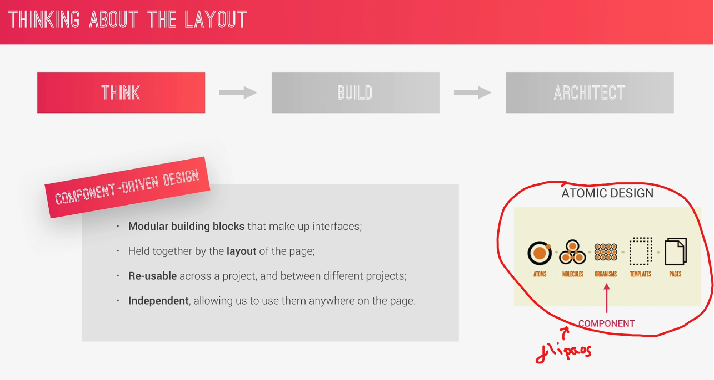
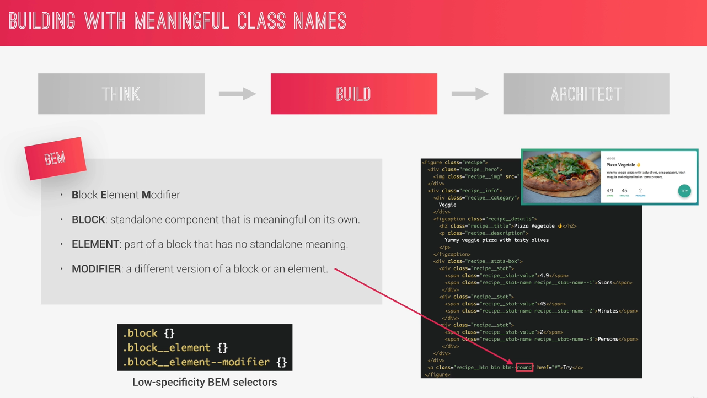
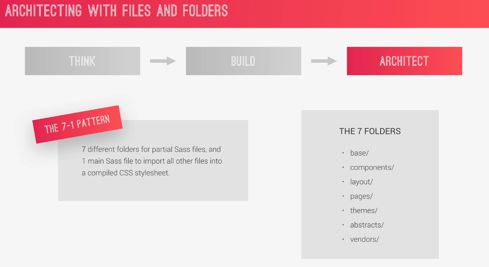

· To start a new project we need a good strategy at very begining, a good mindset.
· Jonas talk about 3 steps: THINK, BUILD and ARCHITECT
· THINK: think about the layout of your webpage or web app before writing code.

· BUILD: build your layout in HTML and CSS with a consistent structure for naming classes.

· ARCHITECT: Create a logical architecture for your CSS with files and folders.
